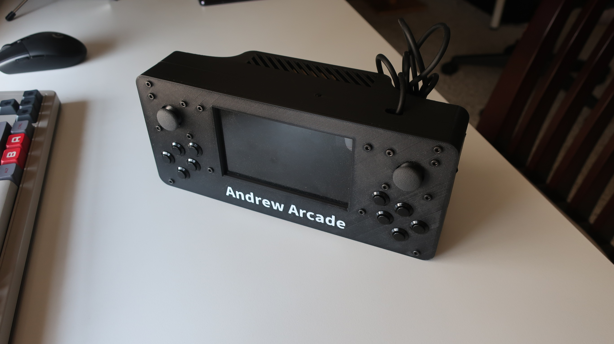
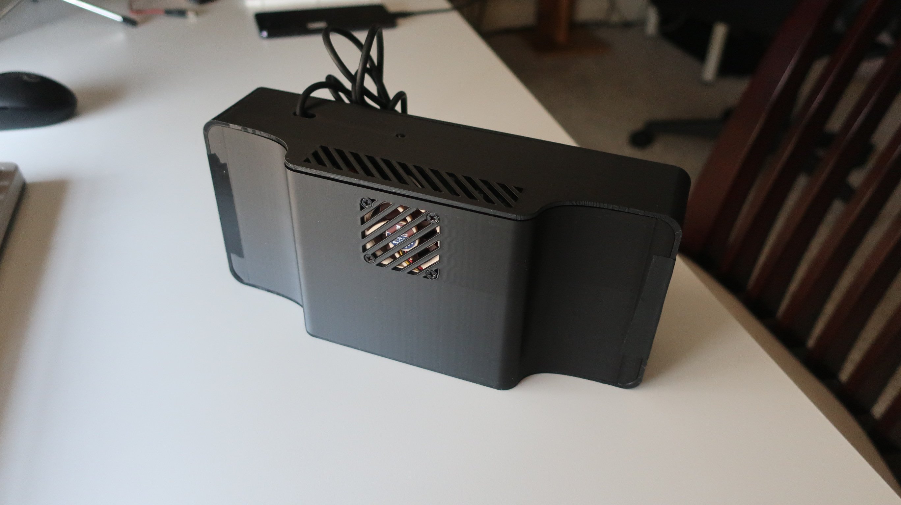
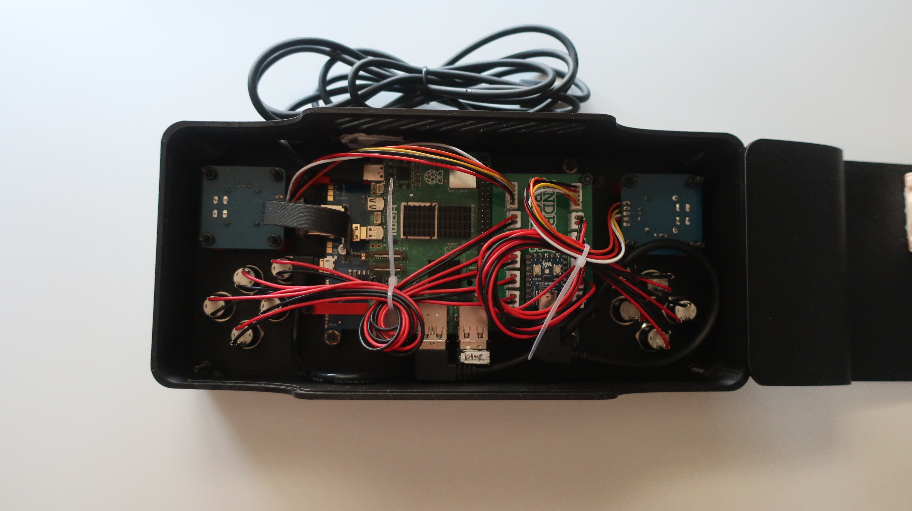
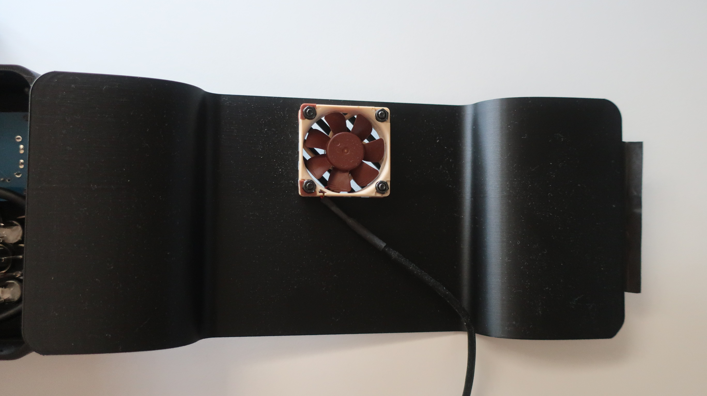
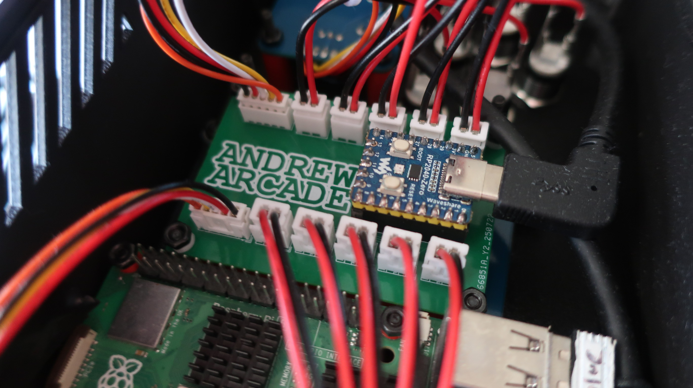
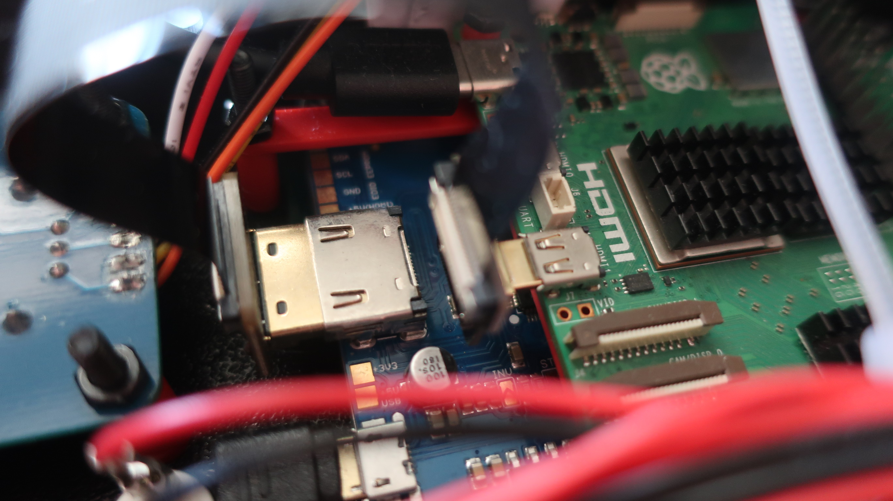

<link rel="stylesheet" href="styles/portfolio.css">

<title>Maker Portfolio</title>

<main class="paper">
  <center>
    <h1>Andrew Cromar</h1>
    <p class="description">Aspiring Programmer - andrewmcromar@gmail.com</p>
  </center>

  <hr>

  <section class="project">
    <h2>Andrew Arcade</h2>
    <a href="https://github.com/Andrew-Arcade" class="github-link">github.com/Andrew-Arcade</a>
    <p class="description">
      A custom game console built on a Raspberry Pi 5 running Linux. Andrew Arcade plays Unity games created by me and other contributors, using Box64 emulation to translate x86 Unity builds to the Pi's ARM architecture. The current version features a redesigned case with improved ergonomics. Future plans include switching to a lighter Linux distribution for better performance and rewriting core apps in Godot, which can be compiled natively for ARM, eliminating the need for emulation.
    </p>
    <div class="photo-collage">
      
      
      
      
      
      
    </div>
  </section>
</main>
